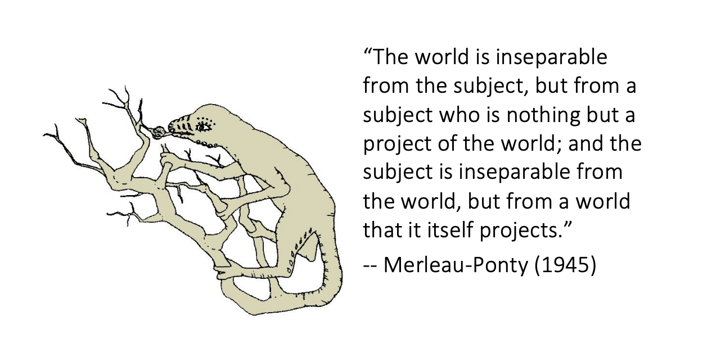

“Bridging the explanatory gap from the other side” @midjourney
An exploration into the philosophy of science.
What is consciousness even?
For many, it is the ability to be human. To feel the warm of sunlight on our skin, to see the redness of sunset, to taste the crunch of a sweet apple, to love and be loved. Distilled, it is the ability to have subjective human experience.
Philosophers in particular define consciousness as experience. Something is conscious if there is an experience to be like that thing. But there is a deeper question that philosophers have been digging at for the past few millennia: why should all of this experience feel like anything? How do we get from the physical act of feeling things in our environment to the mental experience of being human?
This is the mind-body problem and the fundamental question of the hard problem of consciousness.
Ever since the turbulent events of the early 20th century, logical positivism had flowered. Logical positivism is a belief that scientific knowledge is the only kind of factual knowledge, discounting and pushing away the realm of metaphysics to the sidelines. The question of consciousness was (and in many ways, still is) taboo to many philosophers and scientists alike, perceived as too “new-age-y” or metaphysical to be considered a worthwhile pursuit. Philosophers were encourage to “earn their keep” by providing actual contributions to science rather than musing about what it means to be human.
As metaphysical questions about consciousness faded slowly, behaviourism found its footing through psychology. Behaviourists believed that the mind could be entirely understood purely by reducing it to its environmental inputs and behavioural outputs.
To give them credit, many scientists found success through this approach. Scientists figured out how to correlate brain states with solving problems and even feelings of pain and pleasure. They figured out how activations in the V1 area of the cortex react to certain colours like the redness of an apple. Further physiological work discovered the existence of the V4-V8 areas which had an even stronger correlation with shapes, motion, and lighting conditions. The moonshot goal was to build up to a full neural correlate of consciousness or NCC — some way of explaining what physical brain states correlate to mental ones.
Yet, at the end of the day, all of this work only proved correlation. Behaviourist approaches were no closer to answering the causal question of how physical brain states produce mental ones. Any theory that attempted to explain consciousness in terms of the physical is forced to take no less than a leap of faith from the objectively physical to the subjectively mental. This leap is across what is known as the explanatory gap.
“The mind-body problem is not just a local problem having to do with the relation between mind, brain, and behaviour in living animal organisms … it invades our understanding of the entire cosmos and its history.” (Thomas Nagel, Mind and Cosmos)
This isn’t just a problem for philosophy or neuroscience but rather our entire understanding of the physical world — this is the blind spot of science.
“Vector illustration of hands grasping at the explanatory gap” @midjourney
Scientific materialists argue that science and the scientific method enables us to get “outside of experience” and grasp the world in and of itself. Yet, subjective experience is present at every step1. When we look to send people to the cosmos, we do so by formulating theories and models about how we think they work. All of this depends on the subjective experience. We look at the results of our complex telescopes and formulate theories based off of what we have learned and have observed in the world. We pull scientific models from our experiments and observations but again, these are models and idealisations, not actual instantiations of things in the world.
“In principle, it is absurd to think that we can explain consciousness by reducing it to certain objects of science, since these objects are abstract relational structures extracted from the life-world of lived experience” (Husserl, The Crisis of the European Sciences and Transcendental Phenomenology)2
Gottfried Leibniz, Immanuel Kant, Arthur Schopenhauer, and Bertrand Russel were all strong believers that a fully physical account of the world actually offers no explanation of the intrinsic nature3 of the things within it.4 The ideal gas law tells us how pressure, volume, amount, and temperature of a gas are all related to each other, but tells us nothing about what each of those things in and of themselves are. Chemistry tells us that Carbon has an atomic number of six. At first glance, this seems be an intrinsic property. But probe deeper at what an atomic number truly represents and all it is the number of protons it has. Protons themselves are not “real” things. They are a convenient model of how this group of abstractions we call quarks behaves together depending on their relations. Mass is a property that determines how an object will obey the relation . Again, it is abstractions all the way down. Purely physical descriptions tell us not what matter is but what what it does.
Physics, by name, is supposed to be a mathematical theory of the physical. Yet mathematics by nature is purely relational; numbers are quantifiers on abstract objects, formulas describe precise relations between variables. But intuitively, there must also be an intrinsic nature to these objects as well. What is an atom in and of itself? This question is not answered by a relational account of the world.
It is tempting to say at this point that perhaps a relational view all there is to reality. After all, this is realistically all that is useful to the functioning of society. It has enabled us to program silicon, photograph the depths of the universe, and predict weather across the world.
Yet intuitively, a world held up purely through relations does not make sense. As Hedda Hassel Mørch pointed out in her critique of physics for ignoring consciousness, “for there to be a relation there must be two things being related.” 5 Otherwise, the relationship is empty — “a show that goes on without performers, or a castle constructed out of thin air.” Mørch argues that all physical relations should be made real by some substance that itself is not purely relational or else there would be no difference between mere mathematical abstraction and the concrete universe.
Clearly, if we wish to poke beyond this veil of pure abstractions, our current explanations of our reality will not do: intrinsic natures simply cannot be captured through a purely physical approach. Materialism as given so far does not seem to stand. Taking its physical description as the totality is like confusing the map as the territory. It may be fine if you just need the map to navigate the world, but to open one’s eyes to the real world, we must dig deeper.
We thus try to bridge the explanatory gap from the other side. Perhaps consciousness is fundamental to reality, not the other way around.
“The life-world contains the universe” illustrated in the style of Studio Ghibli @midjourney
Up until this point, I have painted a picture of why the intrinsic nature of consciousness cannot be fully explained by the physical. Now, I push to make a stronger claim that consciousness is primary — namely existentially, transcendentally, and epistemologically. For something to be primary is for it to be the first and foremost, a prior for all else that comes after it.
It seems almost self-evident that consciousness is existentially primary — it is through the subjective human experience that the universe is disclosed to us. Arthur Eddington argued that the one thing we know concretely about consciousness is that it has an intrinsic nature.6 René Descartes famously said “cogito, ergo sum”: I think, therefore I am.7 It is the foundation upon which Descartes builds upon his certainty in his knowledge about the world. In all the ways we can be mistaken about reality, consciousness is not one of them — it is a reality that we apprehend directly and without inference. Thus, consciousness is existentially primary.
Consciousness is also transcendentally primary. Kant defined transcendental primacy as all knowledge which is “occupied not so much with objects as with the mode of our knowledge of objects in so far as this mode of knowledge is to be possible a priori.” 8 In more colloquial language, the transcendental primacy of consciousness refers to how consciousness is not another object of knowledge, but that by which any object can become knowable.
Edmund Husserl, in his 1936 work The Crisis of European Sciences and Transcendental Phenomenology, defines a concept called the life-world. Roughly defined, it refers to the world as it is collectively experienced. Husserl likened this model of consciousness to our visual horizon: it is not really an object, but a rather a process of uncovering or displaying potentialities.2
It is in this way then that the horizonal sense of consciousness is not something that can be had, but rather something we live. Quoting Bertrand Russel, “we know nothing about the intrinsic quality of physical events except when these are mental events that we directly experience.”9 As such, consciousness is transcendentally primary.
Merleau-Ponty on the world and consciousness
Consciousness is additionally epistemically primary — it is the source and destination of all knowledge. In creating models, we set aside aspects of experience on which we have doubts about (e.g. our senses, emotions, etc.) and extract idealised and abstract models (e.g. mathematics, physics, logic). Even the most abstract physical relation or mathematical formulas describe some “real” thing we are trying to model or express a relation between. These models ideals and models are only as useful insofar as we can implement these abstractions as things we can use to measure, predict, and control phenomena within our lived experience. In this way, consciousness is epistemically primary.
I will pause here to clarify that I am not claiming consciousness to be ontologically primary. I am not making any sort of panpsychist claim that consciousness exists as a fundamental aspect of reality where everything has a small amount of consciousness.10 Neither am I claiming that consciousness exists inherently in the natural world as a fundamental aspect of reality.11
Rather, I am positing a form of neutral monism that sits somewhere between physicalism and idealism. Monism, in its simplest form, suggests that there is only one kind of underlying reality. A neutral stance on this does not side with either matter or mind, instead a potential 3rd substance. Russel explained this form of reality as having “a single underlying nature that is neither mental nor physical but capable of being expressed in these two different ways.”12 Much like the interiors and exterior of any object, Russel’s account of the mental and physical imply and necessitate each other as reflection of a single nature.
In Husserl’s horizon metaphor, the horizon is not possible without a world to be observed but the world also cannot be perceived without a perceiver. Similarly, the horizon of consciousness is not possible without the physical but the the physical cannot be perceived without the mental. It is absurd to try to reduce one completely to another.
Francisco Varela’s notion of “mutually generative constraints,”13 points toward a possibility where both physicalism and idealism work together towards reciprocal enrichment:
- Phenomenological reports may help to pick out and ascribe meaning to previously unnoticed neural configurations
- Neurological findings may become an incentive for re-categorization and further development in phenomenological research
This neutrally monistic view of consciousness does not “solve” the hard problem. Rather, the problem never even arises because the physical world is no longer the standard for being, and objectivity is no longer the ultimate standard of being.
It is in this neutrally monistic view that one can acknowledge consciousness as primary without necessarily needing to discount our existing objective knowledge about the world.
Instead of absorbing or reducing contents of experience into the relational network of objective science or vice versa, we could strive towards embedding these experiences within a broader network of a potentially new amplified science of structures which we may not know of yet.
Adapted version of my PHIL451A final paper.
“A beautiful observatory in the park of Mars” in the style of James Paik and Ross Tran @midjourney
Footnotes
-
The upshot is that there is no simple way to remove our experience as scientists from the characterization of the physical world. In Popperian fashion, scientific knowledge then is a self-correcting narrative made from the world and our experience of it evolving together. Popper personally rejected logical positivism as well. He believe that there are statements that have varying statements of ‘truth’ or verisimilitude relative to our conscious experience of the world. ↩
-
Husserl, E., 1936, The Crisis of the European Sciences and Transcendental Phenomenology ↩ ↩2
-
In philosophy, an intrinsic property is a property that an object has in and of itself, whereas extrinsic properties are properties than depend on that object’s relation with other things. ↩
-
Kant, Immanuel, 1787, Critique of Pure Reason. Leibniz, Gottfried Wilhelm, 1686, Discours de métaphysique (Discourse on Metaphysics), G, IV. Schopenhauer, Arthur, 1818, Die Welt als Wille und Vorstellung. Russel, Bertrand, 1959, My Philosophical Development ↩
-
Eddington, A., 1928, The Nature of the Physical World, ↩
-
Descartes, R., 1641, Meditations on first philosophy, Meditation II ↩
-
Kant, I., 1787, Critique of Pure Reason A295/B352 ↩
-
Russel, B., 1959, My Philosophical Development ↩
-
In fact, I think there are quite a few problems in panpsychist theories, namely how theories like Giulio Tononi’s IIT define information and how they fail to adequately resolve the Combination Problem. The typical panpsychist response would be to agree that consciousness could never emerge from exclusively physical processes and that consciousness exists as a fundamental aspect of reality (often referred to as the Intrinsic Nature Argument). One of the original arguments for panpsychism posited by Eddington, Russell, Strawson relies on quite a few problem assumptions (namely, that “relational properties are determined by intrinsic properties” and “own inner awareness reveals that phenomenality is an intrinsic property”). A more modern form of this argument crops up in IIT and has been widely lauded as influential in finally providing a testable hypothesis of consciousness. However, Tononi defines information in very atypical fashion and refuses to address potential edge cases in which integrated information of seeming non-conscious objects (e.g. a large number of connected logic gates which do not compute anything meaningful) is unreasonably high (and potentially infinite). ↩
-
The position of ontological idealism explores this further, positing it is fundamentally human consciousness that gives rise to the physical world. This is not a new idea, having being explored in both Eastern thought (through Pratyabhijna self-awareness) and Western thought (platonic idealism). ↩
-
Russel, B., 1919, “On Propositions: What They Are and How They Mean”, Proceedings of the Aristotelian Society, Supplementary Volume 2: 1–43. pp. 283–321. ↩
-
Varela, F. J. (1996). Neurophenomenology: A methodological remedy for the hard problem. Journal of consciousness studies, 3(4), 330-349. ↩